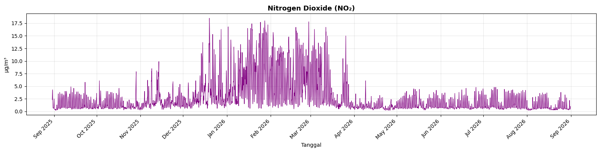

Analisis Kualitas Udara Kabupaten Sumenep
Website ini dibuat untuk memenuhi tugas mata kuliah PSD mengenai pengumpulan, pemahaman, dan eksplorasi data kualitas udara.
Data yang digunakan merupakan data polutan pada wilayah Kabupaten Sumenep dengan interval pengamatan setiap satu jam.
Periode: 1 September 2025 - 31 Agustus 2026
Ringkasan Data
8.760
Jumlah data
365
Hari
4
Parameter polutan
1 Jam
Interval data
1. Business Understanding
Tujuan
Tujuan dari tugas ini adalah untuk mengetahui kondisi kualitas udara di Kabupaten Sumenep berdasarkan data beberapa polutan selama satu tahun.
Permasalahan
Kualitas udara dapat mengalami perubahan dari waktu ke waktu. Oleh karena itu, diperlukan data untuk melihat bagaimana perubahan konsentrasi polutan selama periode pengamatan.
Pertanyaan yang Ingin Dijawab
- Bagaimana perubahan konsentrasi polutan dari waktu ke waktu?
- Kapan terjadi nilai polutan yang tinggi?
- Apakah terdapat nilai yang terlihat tidak biasa?
- Bagaimana pola polutan selama satu tahun?
Manfaat
1. Manfaat untuk informasi
Hasil analisis dapat memberikan gambaran sederhana mengenai kondisi kualitas udara di wilayah Sumenep.
2. Manfaat untuk analisis
Data dapat digunakan untuk melihat pola perubahan konsentrasi polutan berdasarkan waktu.
3. Manfaat untuk pengamatan
Hasilnya dapat menjadi informasi awal untuk pengamatan kualitas udara lebih lanjut.
4. Manfaat pembelajaran
Tugas ini melatih proses pengolahan data mulai dari crawling, penyimpanan, pemahaman, eksplorasi sampai visualisasi.
Data kualitas udara digunakan untuk mengetahui perubahan konsentrasi polutan di Kabupaten Sumenep selama satu tahun.
2. Data Understanding
Sumber Data
Data kualitas udara diperoleh dari Open-Meteo.
Data dicatat setiap satu jam pada satu titik koordinat di wilayah Kabupaten Sumenep.
Periode Data
Data yang digunakan mencakup periode:
Total terdapat 365 hari atau 8.760 pengamatan per jam.
Koordinat Data
Titik koordinat yang digunakan adalah:
Latitude: -7.000000
Longitude: 113.899994
Parameter Polutan
PM2.5
PM2.5 merupakan partikel udara yang memiliki ukuran sangat kecil, sekitar 2,5 mikrometer atau lebih kecil.
Sumbernya dapat berasal dari kendaraan, pembakaran, debu, dan aktivitas industri.
Satuan: μg/m³
PM10
PM10 merupakan partikulat udara dengan ukuran sekitar 10 mikrometer atau lebih kecil.
Sumbernya dapat berasal dari debu, tanah, jalan, konstruksi, dan pembakaran.
Satuan: μg/m³
CO₂
CO₂ atau karbon dioksida merupakan gas yang terdapat di atmosfer.
Salah satu sumber CO₂ dari aktivitas manusia adalah pembakaran bahan bakar.
Satuan: ppm
NO₂
NO₂ atau nitrogen dioksida merupakan gas yang dapat dihasilkan dari proses pembakaran.
Sumbernya dapat berasal dari kendaraan bermotor dan aktivitas industri.
Satuan: μg/m³
Deskripsi Fitur
| Fitur | Tipe Data | Penjelasan | Satuan |
|---|---|---|---|
| time | Datetime | Menunjukkan waktu ketika data dicatat. | - |
| pm10 | Numerik | Konsentrasi PM10. | μg/m³ |
| pm2_5 | Numerik | Konsentrasi PM2.5. | μg/m³ |
| co2 | Numerik | Konsentrasi karbon dioksida. | ppm |
| no2 | Numerik | Konsentrasi nitrogen dioksida. | μg/m³ |
3. Eksplorasi Data
Eksplorasi dilakukan untuk mengetahui kondisi awal dataset sebelum digunakan untuk analisis lebih lanjut.
Pemeriksaan Data
| Pemeriksaan | Hasil |
|---|---|
| Jumlah observasi | 8.760 |
| Periode | 1 September 2025 - 31 Agustus 2026 |
| Missing value | 0 |
| Data duplikat waktu | 0 |
| Nilai negatif | 0 |
Statistik Sederhana
| Parameter | Minimum | Rata-rata | Maksimum |
|---|---|---|---|
| PM2.5 | 0.10 | 12.84 | 53.20 |
| PM10 | 0.10 | 14.64 | 54.90 |
| CO₂ | 429.00 | 443.07 | 497.00 |
| NO₂ | 0.20 | 2.64 | 18.50 |
Apakah Ada Data Aneh?
Pada dataset terdapat beberapa nilai yang secara statistik terlihat cukup tinggi dibandingkan dengan sebagian besar data.
Nilai tersebut belum tentu merupakan kesalahan. Pada data lingkungan, perubahan nilai dapat terjadi karena perubahan kondisi lingkungan maupun aktivitas manusia.
Oleh karena itu, nilai yang tinggi perlu diperiksa lebih lanjut berdasarkan waktu terjadinya dan kondisi wilayah.
Deteksi Outlier dengan IQR
| Parameter | Jumlah Outlier | Nilai Maksimum | Waktu Maksimum |
|---|---|---|---|
| PM2.5 | 529 | 53.20 | 02 Maret 2026 14:00 |
| PM10 | 409 | 54.90 | 02 Maret 2026 14:00 |
| CO₂ | 742 | 497.00 | 10 November 2025 03:00 |
| NO₂ | 939 | 18.50 | 19 Desember 2025 23:00 |
Outlier berdasarkan metode IQR tidak langsung berarti data salah. Data tersebut hanya menunjukkan nilai yang berbeda cukup jauh dari sebagian besar data.
4. Wilayah Pengambilan Data
Dalam pengambilan data, wilayah penelitian dibatasi menggunakan file GeoJSON.
GeoJSON digunakan untuk menentukan batas wilayah Kabupaten Sumenep yang menjadi fokus penelitian.
Titik Koordinat
Latitude: -7.000000
Longitude: 113.899994
Peta Wilayah

Gambar menunjukkan wilayah yang digunakan dalam penelitian berdasarkan GeoJSON.
5. Time Series
Time series digunakan untuk melihat perubahan nilai polutan berdasarkan waktu.
Data yang digunakan memiliki interval setiap satu jam selama satu tahun.

Sumbu horizontal menunjukkan waktu pengamatan, sedangkan sumbu vertikal menunjukkan nilai konsentrasi polutan.
Dari grafik dapat dilihat bahwa nilai polutan mengalami perubahan selama periode pengamatan.
Beberapa waktu menunjukkan adanya kenaikan nilai yang cukup tinggi. Kondisi tersebut dapat diperiksa kembali menggunakan data asli.
6. Kesimpulan
- Dataset memiliki sebanyak 8.760 observasi dengan interval waktu setiap satu jam.
- Data mencakup periode 1 September 2025 sampai 31 Agustus 2026.
- Terdapat empat parameter yang dianalisis, yaitu PM2.5, PM10, CO₂, dan NO₂.
- Hasil pemeriksaan awal tidak menemukan missing value, duplikasi waktu, dan nilai negatif.
- Terdapat beberapa nilai yang termasuk outlier berdasarkan metode IQR.
- Nilai outlier tidak langsung dianggap sebagai kesalahan karena dapat terjadi akibat perubahan kondisi lingkungan.
- Grafik time series digunakan untuk melihat perubahan konsentrasi polutan dari waktu ke waktu.
File Dataset
File yang digunakan dalam tugas ini dapat diakses melalui tombol berikut.